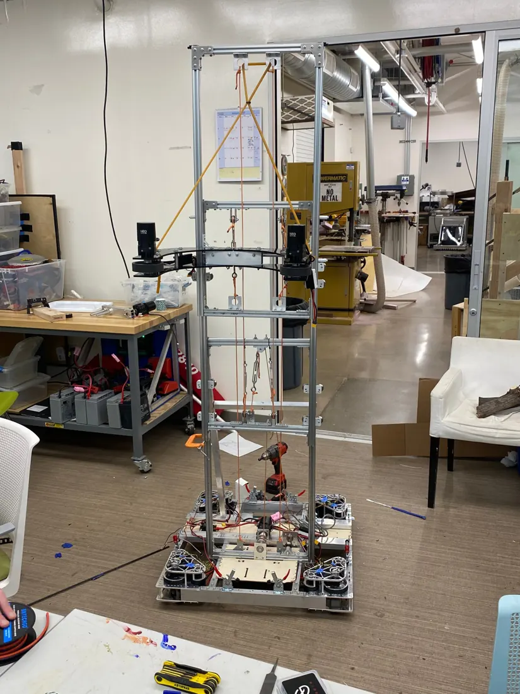
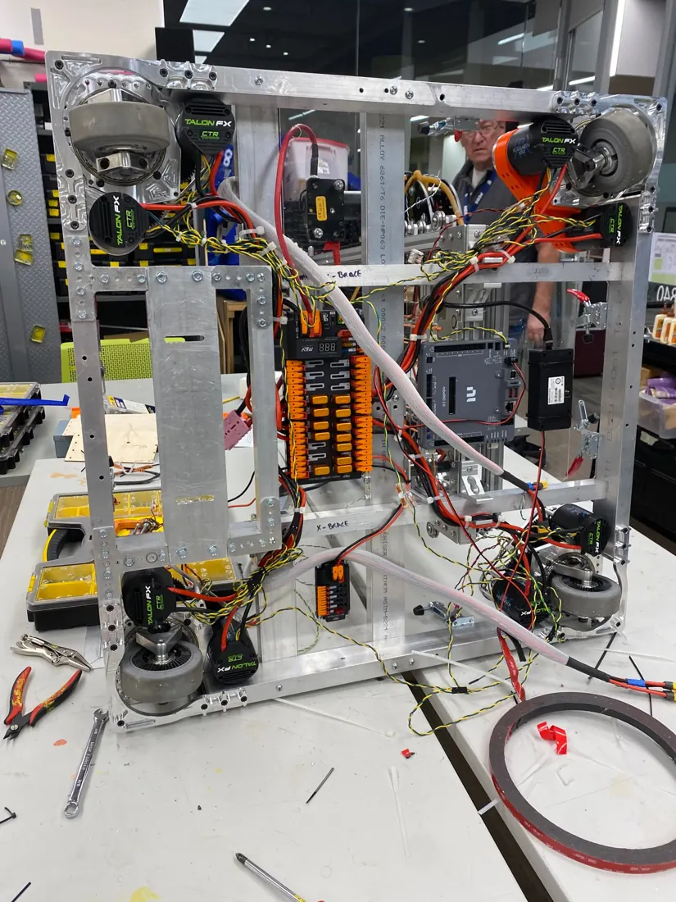
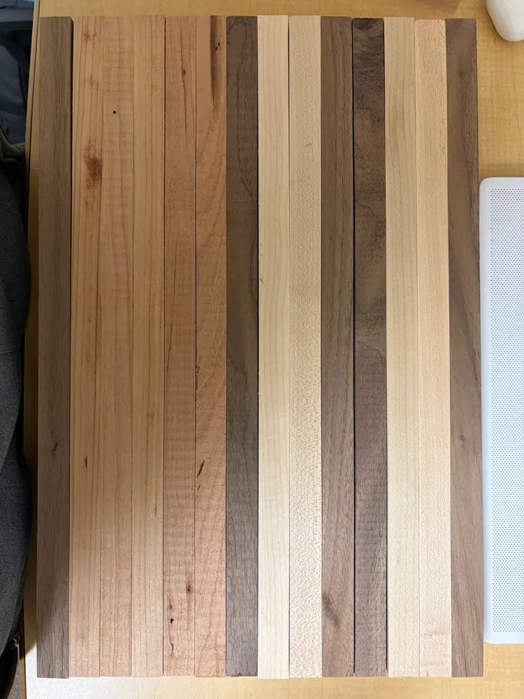
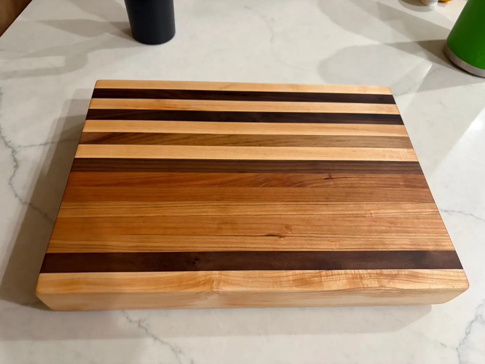
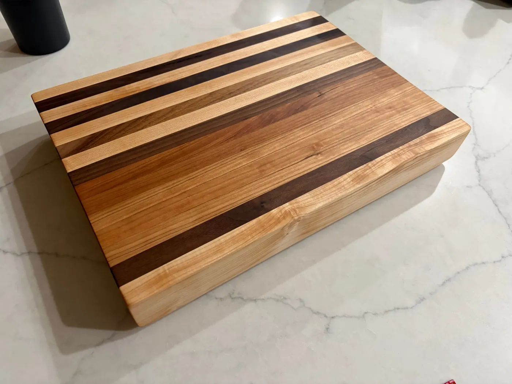

Hands-on
Workshop
Mill, lathe, saws, and a very good cutting board. I like making a thing exist, then making it better.
013 seasons
FIRST Robotics
Competition
Manufacturing sub-team at Phoenix Country Day School, 10th through 12th grade. Every build season I machined robot parts, then helped build and program the robot that used them.
- Team
- 2840
- Role
- Manufacturing
- Machines
- Mill, lathe, circular saw, band saw
- Seasons
- Three
Photos here are from two of my three seasons. The third lives in my memory and a lot of metal chips.



02Made it myself
The cutting
board
Edge-grain, mixed hardwoods, built from loose strips. Drag the handle to see where it started.
- 01Cut the strips
- 02Arrange the grain
- 03Glue up and clamp
- 04Flatten and finish


StripsFinishedFIG. 05 Strips to board, drag to compare

Tools I'm comfortable with
milllathecircular sawband sawcomputer hardware repairhand tools
No yellow tags yet, but I'm working on it.
© 2026 Sebastian WesleySan Luis Obispo, CA · Cave Creek, AZHand-coded, hand-machined, occasionally fueled by Taco Bell.